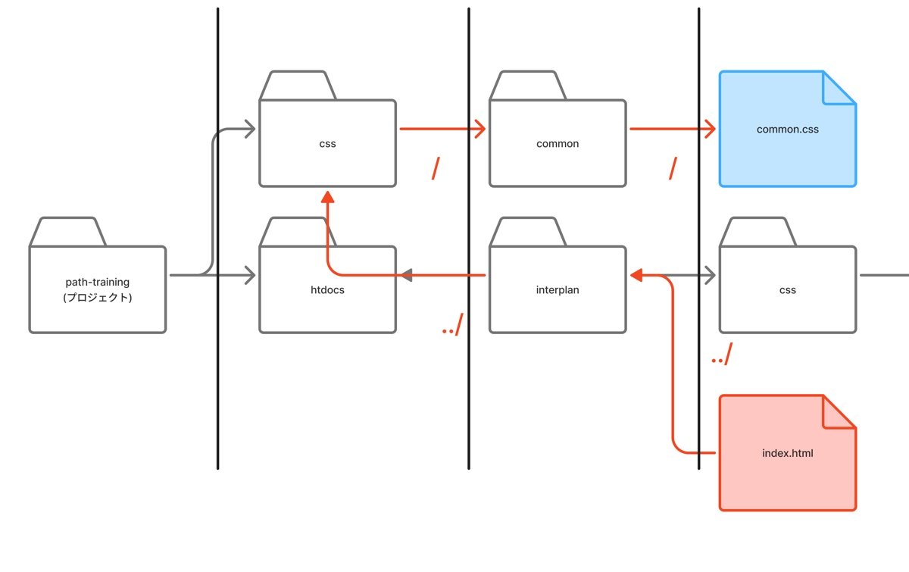
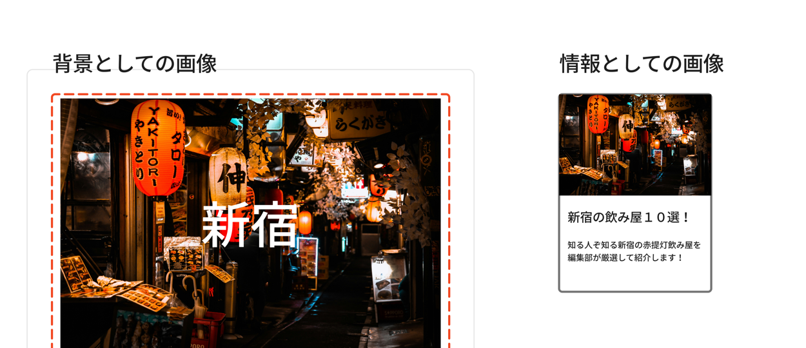
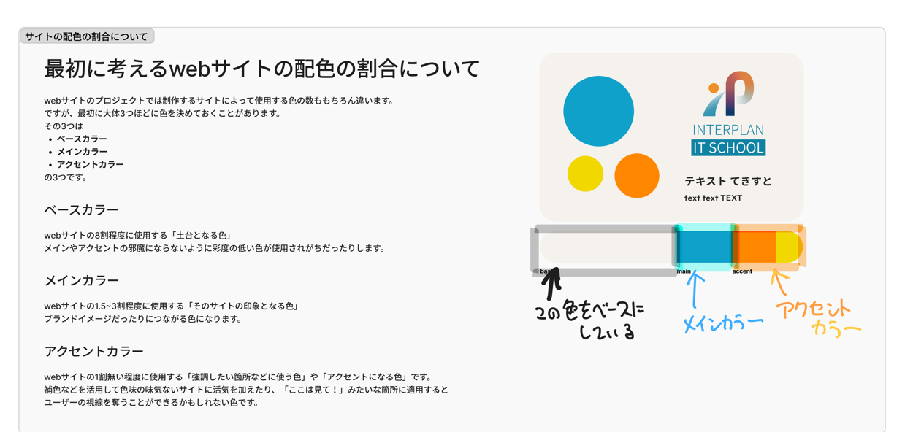

訓練校｜全6時間の集中授業
テーマは 「フォルダの整理・パス」「画像の置き方」「色彩・配色の基礎」。
かんたんに言うと 「index.html は直下に置くとURLが短くなる」「画像は img タグ＋alt、背景は CSS の background」「サイトの色は ベース70%・メイン25%・アクセント5% の3色で設計する」という話です。
| 時刻 | 内容 | 大事さ |
|---|---|---|
| 00:00 | リセットCSS・複数クラスでカード作成 | ★★★ |
| 00:15 | コメントアウト（Cmd/Ctrl + /） | ★★ |
| 01:03 | フォルダ構成・index.html（教科書74p） | ★★★ |
| 01:18 | セクションタグ・H1は1回 | ★★★ |
| 01:24 | 相対パス vs 絶対パス | ★★★ |
| 01:39 | 画像の置き方（img/alt/figure/picture） | ★★★ |
| 02:11 | background・object-fit: cover | ★★★ |
| 02:25 | お昼休憩 | — |
| 03:14 | 色彩の基礎（RGB加法/CMYK減法） | ★★★ |
| 03:22 | 色覚特性への配慮 | ★★★ |
| 03:27 | 補色・色のイメージ | ★★★ |
| 04:00 | 休憩 | — |
| 04:09 | 配色の基礎（ベース/メイン/アクセント） | ★★★ |
| 04:45 | 授業終了 | — |
ブラウザの初期余白を消す。reset→styleの順。
共通＋個別の2クラス。意味のある名前を。
Cmd/Ctrl + /。秘密は書かない（丸見え）。
直下に置くとURLが短くなる。
相対＝今の場所から、絶対＝フルURL。
1ページにh1は1つ。入れ子はクロス禁止。
src=パス、alt=代替テキスト。閉じタグなし。
画像をゆがめず枠に収める。
RGB＝混ぜると白、CMYK＝混ぜると黒。
ベース70%・メイン25%・アクセント5%。
ブラウザは勝手に余白などを付けます。それを打ち消すCSS＝リセットCSS。
reset.css（打ち消し担当）と style.css（デザイン担当）に分け、reset → style の順で読み込む（下が優先なので後で上書き）。
<link rel="stylesheet" href="css/reset.css"> <link rel="stylesheet" href="css/style.css">
「box1」だと何の1か伝わらない＆順番が固定される。primary / secondary など意味のある名前を。共通スタイルは1クラスにまとめるのが賢い。
コードを一時的に無効化＆メモする機能。Cmd + /（Mac）/ Ctrl + /（Win）。
/* CSSのコメント */ <!-- HTMLのコメント -->
HTMLのコメントはDevToolsで丸見え。未公開情報・大事なことは書かない（2ヶ月後のセール情報を隠す→バレる）。
サーバーは直下の index.html を自動で開く機能を持っています。だから example.com/ だけでトップが表示されURLが短くなる。top.html だと example.com/top.html まで打つ必要があります。
プロジェクト/ ├── index.html ← 直下に置く（自動で開かれる） ├── about/ │ └── index.html → example.com/about/ ├── css/ │ ├── reset.css │ └── style.css └── img/ └── photo.jpg
CSSは css/、画像は img/ にまとめる。正解はなく就職先のルールに従う。
css/style.css / ../img/a.pnghttps://.../style.css../ ＝1つ上の階層に戻る。「ドサッ／」と覚える（先生ネタ）。

href="../../css/common/common.css" の道のり。../ で上の階層へ戻り、フォルダ名で下りていく<h1> は1ページに1回だけ（一番大きな見出し＝サイトのタイトル）。2つ目以降は h2, h3 と下げる。<section> の中には必ず見出し（h*）を1つ入れる。
タグは入れ子（親子）が基本。クロスさせるのはNG：
/* ○ OK */ <div><p>文</p></div> /* ✕ NG（クロス） */ <div><p>文</div></p>
<img src="img/shinjuku.jpg" alt="新宿の夜景">
src＝画像までのパス、alt＝代替テキスト（音声読み上げ用。できる限り入れる）img、背景＝CSSのbackgroundwidth/heightを無理に指定すると画像が潰れる。object-fit: cover でアスペクト比を保ったままトリミング。フリー素材はUnsplashなど、ダウンロードしたらリネームして img/ にまとめる。

img ＋ alt）色相（色の種類）・明度（明るさ）・彩度（鮮やかさ）。無彩色＝白黒灰、有彩色＝色味のあるもの。
日本人の男性は約20人に1人、女性は約500人に1人が色覚特性を持ちます。
→ 色だけに頼らないデザイン（アイコン・形・動きでも区別できるように）が大切。検査は病院の「石原式」。Web画面では正確に測れません。
色相環で正反対の色＝補色（黄↔紫、青↔オレンジ）。馴染ませたい→近い色、目立たせたい→補色。例：NBAレイカーズは黄×紫（補色）で文字がくっきり。
| 役割 | 割合 | 使い所 |
|---|---|---|
| ベースカラー | 約70% | 背景など土台。彩度低めが多い |
| メインカラー | 約25% | サイトの印象＝ブランド色。ボタン等 |
| アクセントカラー | 約5% | 強調したい所だけ。補色で視線を奪う |

配色パターン：モノクロ／ダイアード（補色2色）／トライアド（3色）／類似色／スプリットコンプリメンタリー。配色サイトはあくまで「きっかけ」、そのまま使わず微調整を。
| 用語 | 意味 |
|---|---|
| リセットCSS | ブラウザの初期スタイルを打ち消すCSS |
| index.html | サーバーが自動表示するトップ用ファイル名 |
| 相対パス | 今のファイルから見た位置（../img/a.png） |
| 絶対パス | フルURL |
| section / h1 | 塊タグ / 最大見出し（1ページ1回） |
| img / alt | 画像タグ / 代替テキスト |
| object-fit: cover | 比率を保ってトリミング |
| RGB / CMYK | 光の三原色（加法）/ 印刷の色（減法） |
| 色相・明度・彩度 | 色の3属性 |
| 補色 | 色相環で正反対の色。コントラスト強 |
| ベース/メイン/アクセント | サイトの3色設計（約70/25/5%） |
object-fit: cover で画像の歪みを防ぐ数字を好まない理由は意味が伝わりづらいから。「box1」って、それって何の1なの？
コメントアウトに大事なことは書かない。DevToolsで丸見え。
RGBは混ぜれば混ぜるほど明るくなって白。印刷のCMYKは混ぜると黒。逆なんですね。
馴染ませたい時は近い色、パキッと差をつけたい時は補色。何か作る時にとても役立つので覚えて。
色だけに頼らないデザインが大事。日本人男性は20人に1人が色覚特性を持つ。